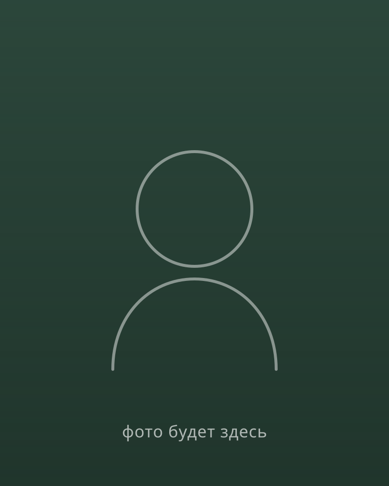

Так я жил много лет. Перепробовал все блокноты и таск-трекеры — и каждый бросал. Потом собрал из Claude личную систему, которая держит все мои дела и память. Проекты наконец поехали. Научу тебя сделать так же, буквально за неделю.
Написать в TelegramЕсли хоть что-то про тебя — читай дальше, я был ровно там же.

У меня диагностированный СДВГ и постоянный хаос в голове. Всегда была куча идей — и почти ни одна не доходила до реализации. Дела начинались на энтузиазме, какое-то время делались, потом бросались. Я перепробовал все методы и приложения для продуктивности, прочитал пару десятков книг по продуктивности и GTD. Не помогало ничего — список задач только копился, пока не становилось проще его не открывать.
Нейросетями я интересуюсь с конца 2022 года. Долго пользовался ими как очень умным гуглом — спросить, получить ответ. А зимой 2025 решил построить из Claude свою личную систему: с памятью, с планированием, с задачами. Не ради кодинга — ради порядка в делах и голове. Система получилась на редкость стабильная и цельная, и все мои давно планируемые проекты полетели.
Момента-озарения не было. Я просто стал замечать, что проект уже ушёл сильно дальше, чем раньше. Там, где я бы давно забросил, — я продолжал и улучшал. Это перестало быть холодным списком задач. Это стало как туду-лист, который читаешь вместе с приятным другом — тем, кто хочет тебе помочь и знает, как сделать лучше.
Я давно люблю делать полезное — opensource, статьи в Википедии, карты, митапы для разработчиков. Помогать — это про меня. Поэтому и хочу научить других тому, что вытащило меня самого.
Почти все учат нейросети писать код — вайбкодинг и приложения. Я учу другому: собрать из неё личную систему, которая наводит порядок в делах и голове.
Первый звонок — 2 часа
Разбираемся, что у тебя в делах и в голове, чего хочется. Прямо на звонке начинаем настраивать твою систему: память, нужные навыки, основу под твои проекты.
Неделя на связи
Ты живёшь со своей системой и пользуешься. Я рядом в переписке — отвечаю на вопросы, помогаю докрутить под тебя.
Второй звонок — 2 часа
Через неделю смотрим, что получилось, а что забуксовало. Улучшаем, убираем лишнее, закрепляем.
Не вдохновение на пару дней, а рабочая система, которую можно открыть и пользоваться:
9 900 ₽
За всё: два звонка по 2 часа и неделя сопровождения между ними.
Написать в TelegramНапиши — расскажешь, что у тебя за хаос, а я честно скажу, помогу или нет. Без обязательств.